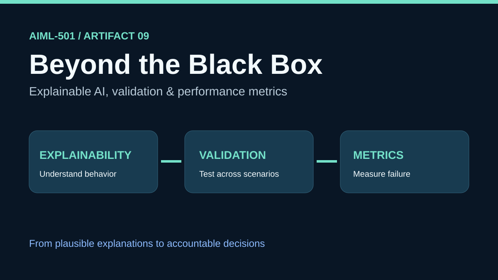

ARTIFACT 9 · VISUAL RESEARCH STUDY
Beyond the Black Box
Explainable AI, validation and performance metrics: complementary evidence for reliable generative AI.

View the visual artifact
If the preview does not open, view the PDF directly.
Research question
How can decision-makers evaluate model transparency and reliability without confusing fluent explanations with faithful traces of internal reasoning?
Method & classification
Organizes evidence into explainability barriers, industry transparency methods, and a validation-to-monitoring workflow. The supporting PDF explains category selection, limitations and professional relevance.
Professional value
Demonstrates critical evaluation of AI claims, validation design, risk-aware metric selection and visual communication for nontechnical stakeholders.